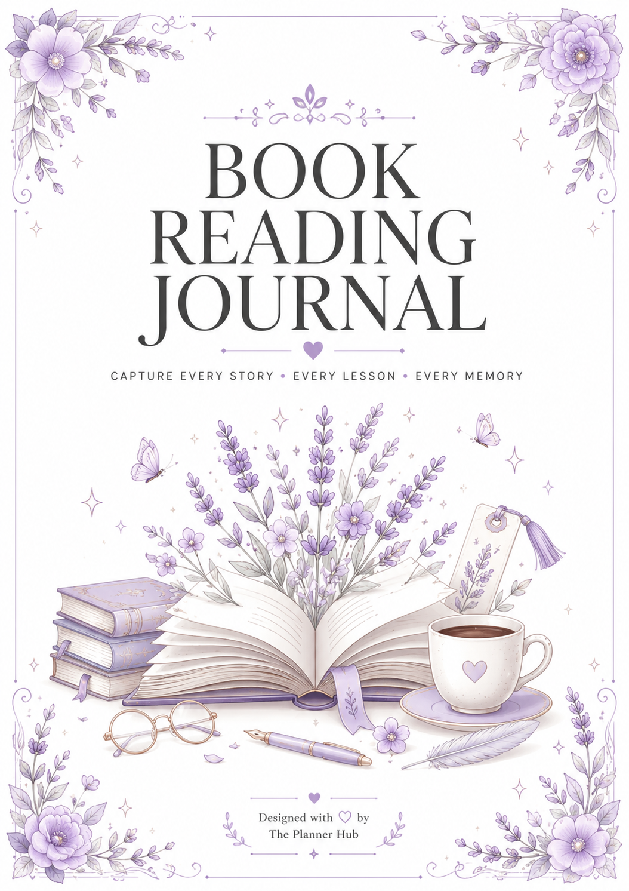

Why Every Reader Needs a Book Reading Journal

Do you ever finish a book, put it back on the shelf, and a few weeks later can barely remember what happened in it? You're not alone. Most readers forget the details of a book within days of finishing it, unless they write something down. That's exactly the problem a book reading journal solves.
Whether you call it a reading journal, a reading log, a book journal, or a reading tracker, the idea is the same: a dedicated space to record and reflect on every book you read.
What Is a Book Reading Journal?
A book reading journal (sometimes called a reading log, book journal, or reading tracker) is a simple, structured space where you record your thoughts, favorite quotes, ratings, and key takeaways for every book you read. Instead of letting your reading experience fade from memory, you capture it, page by page, book by book, in one place you can look back on anytime.
Reading Journal vs. Reading Log
A reading log is usually a short list — title, author, date finished, maybe a rating. A reading journal goes further, adding space for quotes, personal reflections, and notes on what a book meant to you. Most readers eventually want both: a quick log to see everything at a glance, and journal pages for the books that really stayed with them.
5 Reasons to Start a Reading Journal Today
- You remember more of what you read — writing a short reflection after finishing a book helps your brain retain the story, characters, and lessons far longer than reading alone.
- You build a personal reading history — over months and years, your journal becomes a beautiful record of your reading journey.
- You discover your own reading patterns — once you've logged a few dozen books, you start noticing what genres and authors you actually love.
- It makes choosing your next book easier — flipping back through past entries reminds you what you enjoyed most.
- It turns reading into a mindful habit — a journal slows you down just enough to actually reflect, instead of rushing to the next book.
Better Recall Through Active Reflection
Psychologically, the act of writing something down — even a single sentence — forces your brain to actively process it rather than passively absorb it. That's why a two-line reflection after finishing a book does more for memory than re-reading your favorite chapter twice.
Tracking Your Annual Reading Goal
Many readers set a yearly reading goal — 12 books, 24 books, or more — and a reading tracker page makes that goal visible instead of abstract. Watching the list grow book by book is often more motivating than any app notification.
What to Include in Your Reading Journal
- Book title, author, and date started/finished
- A star rating or personal score
- Your favorite quotes
- Key thoughts, lessons, or emotions the book brought up
- Whether you'd recommend it, and to whom
Building a "TBR" (To Be Read) List
A reading journal isn't only for finished books. A running to-be-read list — books friends recommend, titles you spot in a bookstore, sequels you're waiting on — keeps your next read one flip away instead of scattered across screenshots and sticky notes.
Book Club and Group Reading Notes
If you're part of a book club, a dedicated notes section for discussion points, questions, and other members' opinions turns your journal into more than a personal record — it becomes a reference you can bring to every meeting.
Digital Reading Log vs. Paper Journal: Which Should You Use?
Reading apps can track pages and give you badges, but a physical or printable book journal gives you something apps rarely do well: real reflection space, in your own handwriting, that isn't competing with notifications.
Why Readers Still Prefer a Physical Journal
Closing an app to open a journal removes the temptation to check messages or scroll a feed mid-thought. That small shift is often the difference between a two-word note and an actual reflection on what a book meant to you.
Where a Reading App Still Helps
If you want automatic reading-time tracking or social recommendations, an app can be a useful companion. Many readers use an app for discovery and a printable reading journal for the reflective side — quotes, ratings, and personal notes.
How to Start a Reading Journal, Even Mid-Year
You don't need to log every book you've ever read to start. Open to the next blank entry, log the book you're currently reading or just finished, and let the habit build naturally from there.
Week One: Log What You're Reading Now
Start with just the current book — title, author, and one line about what you think so far. There's no need to backfill your entire reading history.
After Each Book: Two Minutes of Reflection
Once you finish a book, spend two minutes on a rating, a favorite quote, and one sentence on how it made you feel. That's often enough to make the entry worth returning to a year later.
Our Take: The Book Reading Journal
If blank notebooks feel intimidating, a guided journal makes the habit effortless. Our Book Reading Journal is a beautifully designed, ready-to-use journal with a dedicated page for every book, so all you have to do is fill it in.
Whether you read one book a month or one a week, a reading journal turns your reading from a passing moment into a lasting habit you can look back on for years.
Reading Journal Ideas to Make It a Habit, Not a Chore
The biggest reason reading journals get abandoned isn't lack of interest, it's making each entry feel like homework. A few simple habits keep it light and sustainable.
Keep Entries Short on Purpose
You don't need a full page per book. A rating, one favorite quote, and two or three sentences on how it made you feel is plenty. The goal is a habit you'll keep for years, not an essay you'll dread writing.
Do a Monthly Reading Wrap-Up
At the end of each month, flip back through what you logged and jot one line summarizing the month as a reader — your favorite read, a genre you gravitated toward, or a book you're still thinking about. This small ritual is often what turns a reading log into a journal you actually enjoy revisiting.
Log Re-Reads Too
If you return to a favorite book, log it again. Comparing how you felt about a story the first time versus years later is one of the most rewarding parts of keeping a long-term reading journal.
None of this needs to feel like a project. A few honest lines after each book, kept up over a year, is usually enough to turn a simple reading habit into a personal library of memories you'll actually want to revisit.
Frequently Asked Questions
What is the difference between a reading journal and a reading log?
The terms are often used interchangeably, but a reading log usually means a brief record of the books, dates, and ratings, while a reading journal (or book journal) goes deeper, with space for reflections, quotes, and personal notes about each book.
How do I start a reading journal?
Start simple: for every book, note the title, author, start and finish date, a rating, your favorite quote, and a few lines on what you thought of it. A guided journal with ready-made prompts makes this even easier.
How many books can one reading journal hold?
It depends on the journal's page count and how much space is given per book. Our Book Reading Journal gives each book its own dedicated entry, so you always have enough room to reflect properly.
Is a reading journal only for students?
Not at all. While students often use reading journals for schoolwork, they're just as popular with casual readers, book club members, and anyone who wants to remember more of what they read.
Can a reading journal help me read more books?
Yes. Many readers find that logging their progress keeps them motivated, helps them set realistic reading goals, and makes it easier to pick their next book based on what they enjoyed most.
Should I keep a digital reading log or a paper reading journal?
Many readers prefer paper or printable journals for reflection, since closing an app to write removes the distraction of notifications. Digital reading apps can still be useful for tracking reading time or discovering new titles.
What should I write in a reading journal if I didn't like the book?
Log it anyway. Noting why a book didn't work for you is just as useful as noting what you loved — it helps you spot patterns in genres, pacing, or writing styles you tend to avoid in future reads.
Check out the Book Reading Journal →